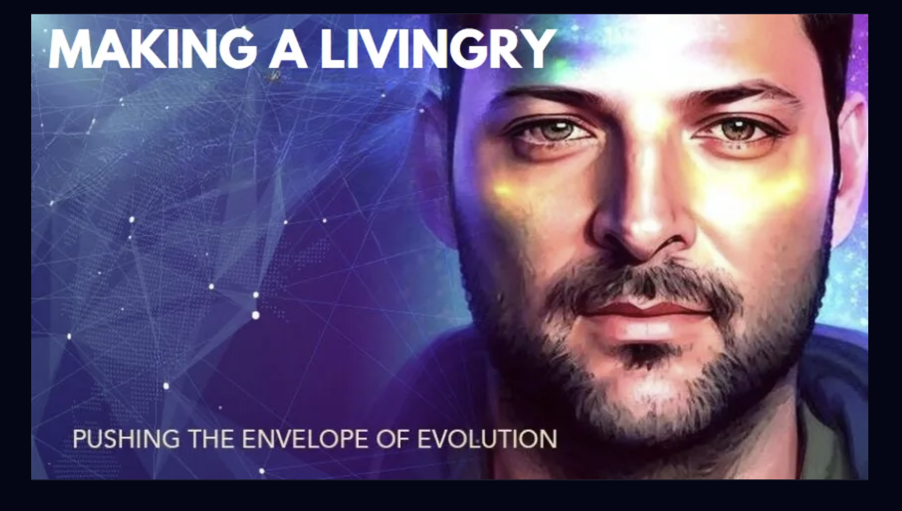
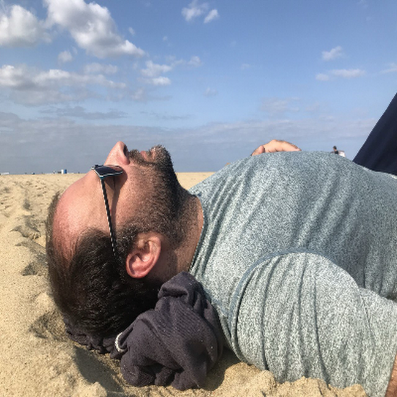

Pushing the envelope of evolution.
His work is to recognize what evolution is asking for next, and to build the infrastructure that meets it.
Working in the lineage of Buckminster Fuller, Barbara Marx Hubbard, and Joseph Campbell, Bret Warshawsky is an author, speaker, futurist, and synergizer at the intersection of consciousness, story, the Mental Health Reformation, and Filmanthropy.
A Civil Rights Moviement for the Soul.
As the visionary behind the Reformation, he is catalyzing the Mental Health Reformation Consortium in New Jersey with business partner Janet Werner (U Have My Word LLC), and leading development of the AWARE App — a tool for first responders to recognize spiritually informed experiences in moments of crisis.
Story as civilizational infrastructure.
As founder of Social Effects, Inc. — a New Jersey startup in development — he is the Voice of Filmanthropy: the practice of making philanthropy a featured, designed-in outcome of the filmmaking process itself. Not a side effect. Not a press release. Not an afterthought.
Both initiatives are in-formed by the broader practice of Evolutionary and Spiritual Philanthropy — a philosophy and economic orientation Bret has lived and embodied for fifteen-plus years, traceable to a 2010 strategic document and a track record of approximately four hundred thousand USD and three million-plus in resources flowed through the projects he has been involved with.
Bret's body of work spans more than a decade of practical co-creation inside the lineage.
He worked directly with Barbara Marx Hubbard from 2014 to her passing in 2019, carrying forward her Seven S's of Co-creation framework. He is an alumnus of the Buckminster Fuller-inspired Design Science Studio, co-founder of Symphonics with his creative partner Andrea Harding — a thirteen-year collaboration in international systems-design and co-creation — and co-creator of Synergy Hub 1.0, Rotterdam (2016–2017), a sixteen-month multi-partner social experiment in gift-economy living and co-creative governance, run with the Meesteren Foundation and United Earth.
His writing — including a chapter in Lisa Nichols's Amazon best-seller Unbreakable Spirit (2011) and more than three hundred essays at The Syntony Times — extends the work in long form.
The wound
is the lens.

His perspective on healing, dignity, and human complexity is earned from the inside — thirty-plus years of living with perceived mental illness, thirteen-plus of them off psychiatric medication, and still in the work.
He doesn't speak from the other side of the experience; he speaks from inside it, alongside everyone else doing the same.
The lens is earned the way every honest lens is — through participation, not through resolution.
04 — A Single Recognition
We are the medicine, and the synergy is the substance.
No one — however brilliant, gifted, or impactful — reaches their highest potential alone. That is scenius. That is spiritual. And it is no coincidence that our most advanced technologies are beginning to mirror it: the recursive ontology where the One experiences itself as the many experiencing themselves as the One, expressing itself — the same recognition ancient wisdom traditions and cutting-edge AI are converging upon.
The future is coming.
And he's hung like a unicorn.
— Sub-pages in development —
01 / Lane One
Mental Health Reformation
02 / Lane Two
Filmanthropy
03 / Through-Line
Evolutionary & Spiritual Philanthropy
04 / Wedge
SV · Web3 · Gen X Futurist
Initiate a conversation
B@fullofitindustries.com